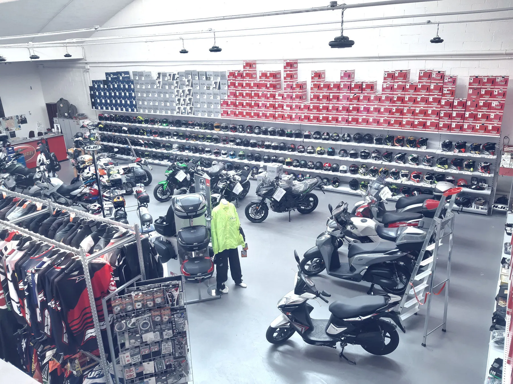
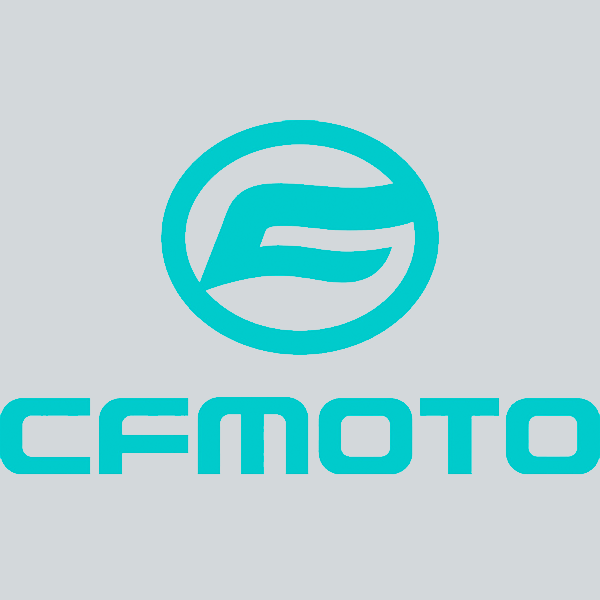
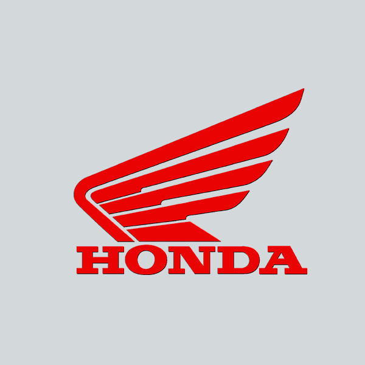
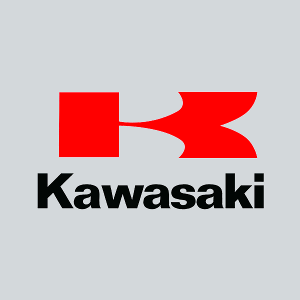
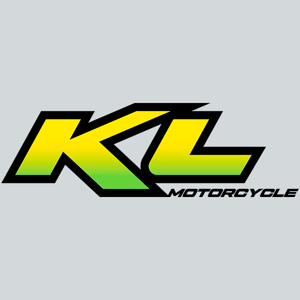
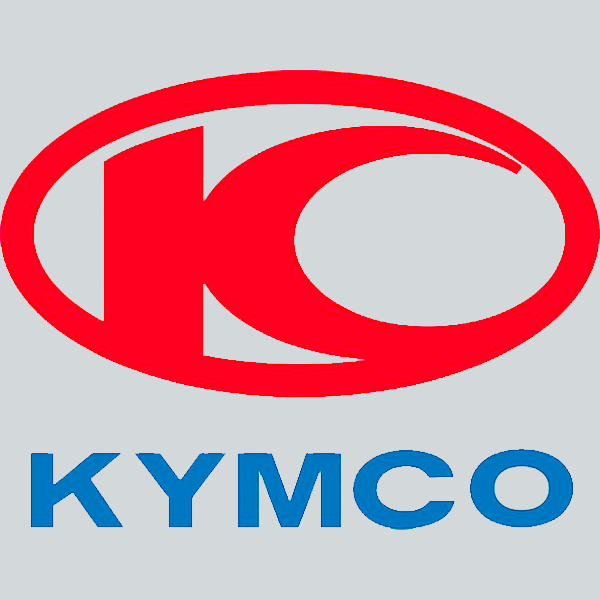
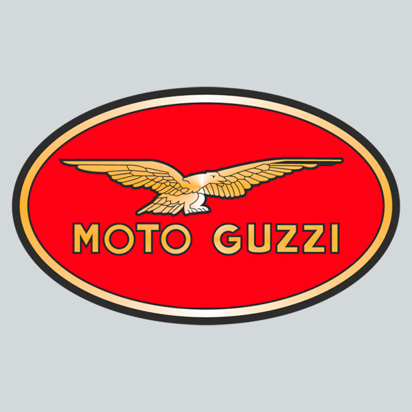

Nuove
Motorbike è autorizzata Honda, Kawasaki e Suzuki. Chiedi informazioni sul modello che ti interessa.
Nuova o usata, per la città o per andare lontano. Raccontaci cosa cerchi e vieni a vedere le proposte in negozio.


CFMOTOFantic
Honda
Kawasaki
KL Motors
KymcoF.B Mondial
Moto GuzziPiaggioSuzukiPer modelli e disponibilità, chiedi direttamente al negozio.
Motorbike è autorizzata Honda, Kawasaki e Suzuki. Chiedi informazioni sul modello che ti interessa.
Le proposte cambiano nel tempo. Contatta il negozio indicando tipo di moto, utilizzo e budget.
La scelta continua in officina, con tagliandi, ricambi e cambio pneumatici da concordare.
Città, viaggi o uscite del weekend. Raccontaci le tue abitudini.
Un modello preciso, una categoria o un budget di riferimento.
Concorda con il negozio la disponibilità della moto che ti interessa.
Chiamaci per conoscere le proposte nuove e usate.